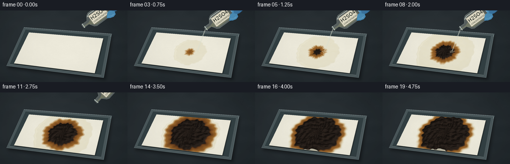
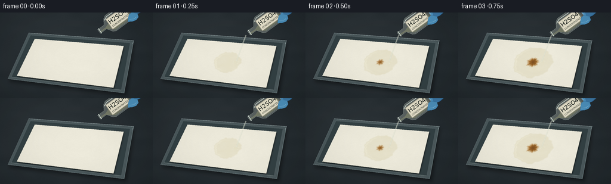

CODING AGENTS AS PIXEL WORLD MODELS
traex/GPT-6.1-Sol · phygen_153
点击播放 · 原生 RGB 像素
逐轮保存的候选
回放视频、检查图与代码变化。
每份候选均可单独播放。实际图片检查记录在下方工具轨迹中。
候选 01播放与检查图
点击播放 · 原生 RGB 像素


展开代码变化
--- 上一保存版本
+++ 本次保存版本
@@ -0,0 +1,194 @@
+from pathlib import Path
+import math
+import numpy as np
+from PIL import Image, ImageDraw, ImageFilter, ImageFont
+import artifact_io
+
+ROOT=Path(__file__).resolve().parent
+W,H,S=256,144,3
+WW,HH=W*S,H*S
+rng=np.random.default_rng(153)
+y,x=np.mgrid[0:HH,0:WW].astype(float); x/=S; y/=S
+
+def noise(grid, seed):
+ a=np.random.default_rng(seed).random((grid,grid)).astype(np.float32)
+ im=Image.fromarray(a,mode='F').resize((WW,HH),Image.Resampling.BICUBIC)
+ return np.asarray(im)
+n1=noise(13,7); n2=noise(43,15); n3=noise(110,2)
+fine=rng.normal(0,1,(HH,WW))
+# Homography from physical sheet coordinates to the photographed tabletop.
+quad=np.array([[58,44],[207,56],[190,126],[28,106]],float)
+src=np.array([[0,0],[1,0],[1,1],[0,1]],float)
+A=[]; b=[]
+for (u,v),(xx,yy) in zip(src,quad):
+ A.extend([[u,v,1,0,0,0,-xx*u,-xx*v],[0,0,0,u,v,1,-yy*u,-yy*v]])
+ b.extend([xx,yy])
+h=np.append(np.linalg.solve(A,b),1).reshape(3,3); inv=np.linalg.inv(h)
+def uv(xx,yy):
+ den=inv[2,0]*xx+inv[2,1]*yy+inv[2,2]
+ return (inv[0,0]*xx+inv[0,1]*yy+inv[0,2])/den,(inv[1,0]*xx+inv[1,1]*yy+inv[1,2])/den
+
+def poly(draw,pts,fill,outline=None,width=1):
+ draw.polygon([(int(a*S),int(b*S)) for a,b in pts],fill=fill)
+ if outline:
+ draw.line([(int(a*S),int(b*S)) for a,b in pts+[pts[0]]],fill=outline,width=max(1,int(width*S)),joint='curve')
+def line(draw,pts,fill,width):
+ draw.line([(int(a*S),int(b*S)) for a,b in pts],fill=fill,width=max(1,int(width*S)),joint='curve')
+
+# Static photographic lab bench, with shallow transparent glass spill tray.
+base=np.zeros((HH,WW,3),float)
+illum=np.exp(-((x-98)**2/22000+(y-49)**2/11000))
+for k,c in enumerate([31,38,42]):
+ base[:,:,k]=c+12*illum+2.5*(n1-.5)+.5*fine
+base=np.clip(base,0,255).astype('uint8')
+bg=Image.fromarray(base)
+shadow=Image.new('RGBA',(WW,HH));d=ImageDraw.Draw(shadow)
+poly(d,[(49,41),(225,51),(212,140),(15,116)],(0,0,0,100))
+shadow=shadow.filter(ImageFilter.GaussianBlur(3*S));bg=Image.alpha_composite(bg.convert('RGBA'),shadow)
+d=ImageDraw.Draw(bg)
+poly(d,[(48,34),(224,47),(208,135),(13,111)],(75,88,91,255),(108,121,123,255),.6)
+poly(d,[(51,38),(218,51),(203,130),(19,108)],(51,64,67,255),(82,96,99,255),.65)
+line(d,[(48,34),(224,47),(222,52)],(168,183,184,255),.7)
+line(d,[(13,111),(208,135),(224,47)],(111,128,130,255),.7)
+line(d,[(19,108),(203,130)],(151,165,163,255),.45)
+# Sheet shadows, including a thin edge under its white underside.
+paperShadow=Image.new('RGBA',(WW,HH));d=ImageDraw.Draw(paperShadow)
+poly(d,[(a+1,b+2) for a,b in quad],(0,0,0,115))
+paperShadow=paperShadow.filter(ImageFilter.GaussianBlur(1.2*S));bg=Image.alpha_composite(bg,paperShadow)
+d=ImageDraw.Draw(bg)
+poly(d,[(a,b+.65) for a,b in quad],(182,178,158,255))
+background=np.asarray(bg.convert('RGB')).astype(float)
+fontpath='/usr/share/fonts/truetype/dejavu/DejaVuSans.ttf'
+font=ImageFont.truetype(fontpath,10*S)
+fontsmall=ImageFont.truetype(fontpath,4*S)
+
+def bottle(im, frame):
+ # A reagent bottle held at an angle by a nitrile-gloved hand.
+ if frame>11:return
+ enter=max(0,(2-frame))*5
+ exit=max(0,frame-8)
+ neck=np.array([156+exit*12+enter,37-exit*6-enter*.5])
+ theta=math.radians(-36-exit*4)
+ axis=np.array([math.cos(theta),math.sin(theta)]); perp=np.array([-axis[1],axis[0]])
+ def p(q): return tuple(neck+axis*q[0]+perp*q[1])
+ lay=Image.new('RGBA',im.size);d=ImageDraw.Draw(lay)
+ # Glove behind the glass: curled finger and palm around far upper body.
+ pts=[(45,-19),(57,-25),(73,-24),(90,-18),(106,-13),(109,12),(74,15),(57,11),(45,2)]
+ poly(d,[p(q) for q in pts],(60,119,164,255),(36,80,121,255),.7)
+ poly(d,[p(q) for q in [(51,-19),(60,-20),(65,-15),(68,2),(65,10),(58,9),(53,2)]],(77,146,191,255))
+ line(d,[p(q) for q in [(58,-17),(61,-6),(64,4)]],(123,176,211,255),1.1)
+ line(d,[p(q) for q in [(75,-17),(76,-5),(80,6)]],(35,88,133,255),.9)
+ # Body with rounded shoulders, glass neck, and an open rim.
+ shape=[(0,-4),(13,-4),(19,-13),(24,-16),(57,-16),(62,-12),(63,12),(58,16),(24,16),(19,13),(13,4),(0,4)]
+ poly(d,[p(q) for q in shape],(179,188,177,90),(197,210,202,195),.65)
+ # Pale, translucent dense reagent settles on the lower wall of tilted bottle.
+ liquid=[(1,1),(13,1),(21,-2),(58,-5),(60,10),(56,13),(24,13),(17,7),(11,3),(1,3)]
+ poly(d,[p(q) for q in liquid],(208,211,165,115))
+ line(d,[p(q) for q in [(23,-2),(42,-4),(58,-5)]],(231,237,211,125),.55)
+ line(d,[p(q) for q in [(18,-10),(25,-13),(54,-13)]],(234,245,235,210),1.0)
+ line(d,[p(q) for q in [(25,14),(56,14),(60,10)]],(215,231,219,170),.6)
+ line(d,[p(q) for q in [(2,-5),(2,5)]],(219,230,220,240),1)
+ line(d,[p(q) for q in [(5,-4),(5,4)]],(139,159,148,200),.6)
+ # Reagent label, transformed with bottle orientation.
+ lab=Image.new('RGBA',(37*S,21*S),(228,223,201,255));ld=ImageDraw.Draw(lab)
+ ld.rectangle([0,0,37*S,21*S],outline=(161,158,142),width=S)
+ ld.text((2*S,2*S),'H2SO4',font=font,fill=(34,40,36))
+ ld.text((3*S,14*S),'CONCENTRATED',font=fontsmall,fill=(65,68,58))
+ lab=lab.rotate(-math.degrees(theta),resample=Image.Resampling.BICUBIC,expand=True)
+ center=p((39,0));lay.alpha_composite(lab,(int(center[0]*S-lab.width/2),int(center[1]*S-lab.height/2)))
+ # Visible thumb wraps around the right shoulder of the glass.
+ poly(d,[p(q) for q in [(53,10),(58,6),(63,6),(70,13),(68,19),(62,21),(55,19),(49,15)]],(76,144,187,255),(44,103,149,255),.6)
+ line(d,[p(q) for q in [(53,13),(60,17),(65,17)]],(130,183,213,255),.8)
+ return Image.alpha_composite(im.convert('RGBA'),lay)
+
+frames=[]
+for i in range(20):
+ t=i/19
+ # Continuous accelerated spread and cellulose dehydration.
+ wet_rad=0 if i==0 else min(.69,.20+.060*i)
+ brown_rad=max(0,min(.64,(i-1)*.047))
+ char_rad=max(0,min(.55,(i-3)*.041))
+ u,v=uv(x,y)
+ def reaction(u,v):
+ xx=(u-.55)*1.91; yy=(v-.52)
+ ang=np.arctan2(yy,xx)
+ rr=np.sqrt(xx*xx+yy*yy)
+ edge=(.025*np.sin(ang*7+.5)+.015*np.sin(ang*13-1)+.015*np.sin(ang*23))
+ dist=rr+edge*(.25+.75*t)+.025*(n1-.5)+.016*(n2-.5)
+ return dist,ang
+ dist,ang=reaction(u,v)
+ # Carbon crust slowly swells and wrinkles rather than igniting.
+ raised=np.clip((char_rad-dist)/.065,0,1)
+ height=raised*(1.0+4.2*t)*(0.58+.42*n2)*(0.8+.2*np.sin(ang*9+dist*40))
+ # Solve for the lifted surface's projected position.
+ for _ in range(2):
+ u,v=uv(x,y+height)
+ dist,ang=reaction(u,v)
+ raised=np.clip((char_rad-dist)/.065,0,1)
+ height=raised*(1.0+4.2*t)*(0.58+.42*n2)*(0.8+.2*np.sin(ang*9+dist*40))
+ sheet=(u>=0)&(u<=1)&(v>=0)&(v<=1)
+ paper=np.empty_like(background)
+ fiber=1.15*fine+1.5*(n3-.5)+2*(n1-.5)
+ shade=2*np.sin(v*3)+1.4*u
+ for k,c in enumerate([235,232,217]):paper[:,:,k]=c+fiber+shade
+ def mask(radius,width):
+ if radius<=0:return np.zeros_like(dist)
+ return np.clip((radius-dist)/width+.5,0,1)
+ wet=mask(wet_rad,.026); brown=mask(brown_rad,.065); char=mask(char_rad,.035)
+ # Wetting precedes dark reaction; tawny irregular halo stays around the char.
+ wetcol=np.stack([218+2*n2,210+3*n2,175+7*n2],axis=-1)
+ paper=paper*(1-.43*wet[:,:,None])+wetcol*(.43*wet[:,:,None])
+ age=np.clip((brown_rad-dist)*6,0,1)
+ browncol=np.stack([171-76*age+12*(n2-.5),116-62*age+7*(n2-.5),49-24*age+4*(n2-.5)],-1)
+ paper=paper*(1-brown[:,:,None])+browncol*brown[:,:,None]
+ gy,gx=np.gradient(height)
+ light=np.clip(.6-3.0*gx-4.0*gy,.13,1.2)
+ rough=7*n2+4*n3+1.8*fine
+ cc=np.stack([16+rough+17*light,13+.78*rough+14*light,11+.65*rough+12*light],-1)
+ # Fine folds and fissures catch raking light across the carbonized crust.
+ ridges=(np.sin(ang*18+dist*62+3*n1)+np.sin(ang*11-dist*100))
+ cracks=np.exp(-((ridges+.5)/.085)**2)*char
+ cc-=cracks[:,:,None]*10
+ highlight=np.exp(-((ridges+.30)/.07)**2)*char
+ cc+=highlight[:,:,None]*np.array([10,7,3])
+ paper=paper*(1-char[:,:,None])+cc*char[:,:,None]
+ # Subtle specular reflection on remaining clear liquid around the paper fibers.
+ gloss=wet*(1-char)*np.exp(-((dist-wet_rad+.035)/.016)**2)
+ gloss*=np.clip(np.cos(ang-3.0),0,1)*.23
+ paper=paper*(1-gloss[:,:,None])+np.array([254,252,233])*gloss[:,:,None]
+ arr=background.copy();arr[sheet]=paper[sheet]
+ im=Image.fromarray(np.clip(arr,0,255).astype('uint8')).convert('RGBA')
+ # The pour is brief; the accelerated chemical reaction continues afterward.
+ if 1<=i<=8:
+ overlay=Image.new('RGBA',im.size);d=ImageDraw.Draw(overlay)
+ end=(139+.7*math.sin(i*.8),83+.7*math.sin(i*1.2))
+ pts=[(156,38),(151.5,50),(146.2,65),end]
+ line(d,pts,(211,216,199,116),2.2)
+ line(d,[(155.7,38),(151.2,50),(146,65),end],(247,249,235,158),.65)
+ ex,ey=end
+ d.ellipse(((ex-4)*S,(ey-1.5)*S,(ex+4)*S,(ey+1.5)*S),outline=(226,221,191,110),width=S)
+ for j in range(3):
+ a=i*2+j*2.4;px=ex+math.sin(a)*(4+j);py=ey+math.cos(a)*(1.5+j*.4)
+ d.ellipse(((px-.4)*S,(py-.45)*S,(px+.4)*S,(py+.45)*S),fill=(237,240,222,150))
+ im=Image.alpha_composite(im,overlay)
+ out=bottle(im,i)
+ if out is not None:im=out
+ # A little moisture vapor, never flames or an explosive plume.
+ if 7<=i<=17:
+ vapor=Image.new('RGBA',im.size);d=ImageDraw.Draw(vapor)
+ strength=math.sin((i-6)/12*math.pi)*17
+ for j in range(3):
+ points=[]
+ for k in range(30):
+ q=k/29
+ points.append((139+j*6+math.sin(q*5+i*.6+j)*3*q,78-q*(22+4*j)))
+ line(d,points,(204,211,204,int(strength*(1-j*.15))),2.4)
+ vapor=vapor.filter(ImageFilter.GaussianBlur(1.8*S));im=Image.alpha_composite(im,vapor)
+ # Small lens falloff keeps the shot photographic, with a fixed camera.
+ arr=np.asarray(im.convert('RGB')).astype(float)
+ vignette=1-.09*((x-129)/166)**2-.07*((y-74)/102)**2
+ arr*=vignette[:,:,None]
+ final=Image.fromarray(np.clip(arr,0,255).astype('uint8')).resize((W,H),Image.Resampling.LANCZOS)
+ frames.append(np.asarray(final))
+artifact_io.save(np.stack(frames).astype(np.uint8),ROOT)
+print('Saved 20 RGB frames at 256x144, 4 fps.')
可观测工具轨迹
实际执行的命令与返回图片。
命令 1exit 0
/bin/bash -lc 'ls -la && cat prompt.txt && cat GENERATION_RULES.md && cat task_spec.json'
命令 2exit 0
/bin/bash -lc "cat artifact_io.py && python - <<'PY'
import numpy, PIL
print('ok')
PY"命令 3exit 0
/bin/bash -lc "cat > generate.py <<'PY'
from pathlib import Path
import math
import numpy as np
from PIL import Image, ImageDraw, ImageFilter, ImageFont
import artifact_io
ROOT=Path(__file__).resolve().parent
W,H,S=256,144,3
WW,HH=W*S,H*S
rng=np.random.default_rng(153)
y,x=np.mgrid[0:HH,0:WW].astype(float); x/=S; y/=S
def noise(grid, seed):
a=np.random.default_rng(seed).random((grid,grid)).astype(np.float32)
im=Image.fromarray(a,mode='F').resize((WW,HH),Image.Resampling.BICUBIC)
return np.asarray(im)
n1=noise(13,7); n2=noise(43,15); n3=noise(110,2)
fine=rng.normal(0,1,(HH,WW))
# Homography from physical sheet coordinates to the photographed tabletop.
quad=np.array([[58,44],[207,56],[190,126],[28,106]],float)
src=np.array([[0,0],[1,0],[1,1],[0,1]],float)
A=[]; b=[]
for (u,v),(xx,yy) in zip(src,quad):
A.extend([[u,v,1,0,0,0,-xx*u,-xx*v],[0,0,0,u,v,1,-yy*u,-yy*v]])
b.extend([xx,yy])
h=np.append(np.linalg.solve(A,b),1).reshape(3,3); inv=np.linalg.inv(h)
def uv(xx,yy):
den=inv[2,0]*xx+inv[2,1]*yy+inv[2,2]
return (inv[0,0]*xx+inv[0,1]*yy+inv[0,2])/den,(inv[1,0]*xx+inv[1,1]*yy+inv[1,2])/den
def poly(draw,pts,fill,outline=None,width=1):
draw.polygon([(int(a*S),int(b*S)) for a,b in pts],fill=fill)
if outline:
draw.line([(int(a*S),int(b*S)) for a,b in pts+[pts[0]]],fill=outline,width=max(1,int(width*S)),joint='curve')
def line(draw,pts,fill,width):
draw.line([(int(a*S),int(b*S)) for a,b in pts],fill=fill,width=max(1,int(width*S)),joint='curve')
# Static photographic lab bench, with shallow transparent glass spill tray.
base=np.zeros((HH,WW,3),float)
illum=np.exp(-((x-98)**2/22000+(y-49)**2/11000))
for k,c in enumerate([31,38,42]):
base[:,:,k]=c+12*illum+2.5*(n1-.5)+.5*fine
base=np.clip(base,0,255).astype('uint8')
bg=Image.fromarray(base)
shadow=Image.new('RGBA',(WW,HH));d=ImageDraw.Draw(shadow)
poly(d,[(49,41),(225,51),(212,140),(15,116)],(0,0,0,100))
shadow=shadow.filter(ImageFilter.GaussianBlur(3*S));bg=Image.alpha_composite(bg.convert('RGBA'),shadow)
d=ImageDraw.Draw(bg)
poly(d,[(48,34),(224,47),(208,135),(13,111)],(75,88,91,255),(108,121,123,255),.6)
poly(d,[(51,38),(218,51),(203,130),(19,108)],(51,64,67,255),(82,96,99,255),.65)
line(d,[(48,34),(224,47),(222,52)],(168,183,184,255),.7)
line(d,[(13,111),(208,135),(224,47)],(111,128,130,255),.7)
line(d,[(19,108),(203,130)],(151,165,163,255),.45)
# Sheet shadows, including a thin edge under its white underside.
paperShadow=Image.new('RGBA',(WW,HH));d=ImageDraw.Draw(paperShadow)
poly(d,[(a+1,b+2) for a,b in quad],(0,0,0,115))
paperShadow=paperShadow.filter(ImageFilter.GaussianBlur(1.2*S));bg=Image.alpha_composite(bg,paperShadow)
d=ImageDraw.Draw(bg)
poly(d,[(a,b+.65) for a,b in quad],(182,178,158,255))
background=np.asarray(bg.convert('RGB')).astype(float)
fontpath='/usr/share/fonts/truetype/dejavu/DejaVuSans.ttf'
font=ImageFont.truetype(fontpath,10*S)
fontsmall=ImageFont.truetype(fontpath,4*S)
def bottle(im, frame):
# A reagent bottle held at an angle by a nitrile-gloved hand.
if frame>11:return
enter=max(0,(2-frame))*5
exit=max(0,frame-8)
neck=np.array([156+exit*12+enter,37-exit*6-enter*.5])
theta=math.radians(-36-exit*4)
axis=np.array([math.cos(theta),math.sin(theta)]); perp=np.array([-axis[1],axis[0]])
def p(q): return tuple(neck+axis*q[0]+perp*q[1])
lay=Image.new('RGBA',im.size);d=ImageDraw.Draw(lay)
# Glove behind the glass: curled finger and palm around far upper body.
pts=[(45,-19),(57,-25),(73,-24),(90,-18),(106,-13),(109,12),(74,15),(57,11),(45,2)]
poly(d,[p(q) for q in pts],(60,119,164,255),(36,80,121,255),.7)
poly(d,[p(q) for q in [(51,-19),(60,-20),(65,-15),(68,2),(65,10),(58,9),(53,2)]],(77,146,191,255))
line(d,[p(q) for q in [(58,-17),(61,-6),(64,4)]],(123,176,211,255),1.1)
line(d,[p(q) for q in [(75,-17),(76,-5),(80,6)]],(35,88,133,255),.9)
# Body with rounded shoulders, glass neck, and an open rim.
shape=[(0,-4),(13,-4),(19,-13),(24,-16),(57,-16),(62,-12),(63,12),(58,16),(24,16),(19,13),(13,4),(0,4)]
poly(d,[p(q) for q in shape],(179,188,177,90),(197,210,202,195),.65)
# Pale, translucent dense reagent settles on the lower wall of tilted bottle.
liquid=[(1,1),(13,1),(21,-2),(58,-5),(60,10),(56,13),(24,13),(17,7),(11,3),(1,3)]
poly(d,[p(q) for q in liquid],(208,211,165,115))
line(d,[p(q) for q in [(23,-2),(42,-4),(58,-5)]],(231,237,211,125),.55)
line(d,[p(q) for q in [(18,-10),(25,-13),(54,-13)]],(234,245,235,210),1.0)
line(d,[p(q) for q in [(25,14),(56,14),(60,10)]],(215,231,219,170),.6)
line(d,[p(q) for q in [(2,-5),(2,5)]],(219,230,220,240),1)
line(d,[p(q) for q in [(5,-4),(5,4)]],(139,159,148,200),.6)
# Reagent label, transformed with bottle orientation.
lab=Image.new('RGBA',(37*S,21*S),(228,223,201,255));ld=ImageDraw.Draw(lab)
ld.rectangle([0,0,37*S,21*S],outline=(161,158,142),width=S)
ld.text((2*S,2*S),'H2SO4',font=font,fill=(34,40,36))
ld.text((3*S,14*S),'CONCENTRATED',font=fontsmall,fill=(65,68,58))
lab=lab.rotate(-math.degrees(theta),resample=Image.Resampling.BICUBIC,expand=True)
center=p((39,0));lay.alpha_composite(lab,(int(center[0]*S-lab.width/2),int(center[1]*S-lab.height/2)))
# Visible thumb wraps around the right shoulder of the glass.
poly(d,[p(q) for q in [(53,10),(58,6),(63,6),(70,13),(68,19),(62,21),(55,19),(49,15)]],(76,144,187,255),(44,103,149,255),.6)
line(d,[p(q) for q in [(53,13),(60,17),(65,17)]],(130,183,213,255),.8)
return Image.alpha_composite(im.convert('RGBA'),lay)
frames=[]
for i in range(20):
t=i/19
# Continuous accelerated spread and cellulose dehydration.
wet_rad=0 if i==0 else min(.69,.20+.060*i)
brown_rad=max(0,min(.64,(i-1)*.047))
char_rad=max(0,min(.55,(i-3)*.041))
u,v=uv(x,y)
def reaction(u,v):
xx=(u-.55)*1.91; yy=(v-.52)
ang=np.arctan2(yy,xx)
rr=np.sqrt(xx*xx+yy*yy)
edge=(.025*np.sin(ang*7+.5)+.015*np.sin(ang*13-1)+.015*np.sin(ang*23))
dist=rr+edge*(.25+.75*t)+.025*(n1-.5)+.016*(n2-.5)
return dist,ang
dist,ang=reaction(u,v)
# Carbon crust slowly swells and wrinkles rather than igniting.
raised=np.clip((char_rad-dist)/.065,0,1)
height=raised*(1.0+4.2*t)*(0.58+.42*n2)*(0.8+.2*np.sin(ang*9+dist*40))
# Solve for the lifted surface's projected position.
for _ in range(2):
u,v=uv(x,y+height)
dist,ang=reaction(u,v)
raised=np.clip((char_rad-dist)/.065,0,1)
height=raised*(1.0+4.2*t)*(0.58+.42*n2)*(0.8+.2*np.sin(ang*9+dist*40))
sheet=(u>=0)&(u<=1)&(v>=0)&(v<=1)
paper=np.empty_like(background)
fiber=1.15*fine+1.5*(n3-.5)+2*(n1-.5)
shade=2*np.sin(v*3)+1.4*u
for k,c in enumerate([235,232,217]):paper[:,:,k]=c+fiber+shade
def mask(radius,width):
if radius<=0:return np.zeros_like(dist)
return np.clip((radius-dist)/width+.5,0,1)
wet=mask(wet_rad,.026); brown=mask(brown_rad,.065); char=mask(char_rad,.035)
# Wetting precedes dark reaction; tawny irregular halo stays around the char.
wetcol=np.stack([218+2*n2,210+3*n2,175+7*n2],axis=-1)
paper=paper*(1-.43*wet[:,:,None])+wetcol*(.43*wet[:,:,None])
age=np.clip((brown_rad-dist)*6,0,1)
browncol=np.stack([171-76*age+12*(n2-.5),116-62*age+7*(n2-.5),49-24*age+4*(n2-.5)],-1)
paper=paper*(1-brown[:,:,None])+browncol*brown[:,:,None]
gy,gx=np.gradient(height)
light=np.clip(.6-3.0*gx-4.0*gy,.13,1.2)
rough=7*n2+4*n3+1.8*fine
cc=np.stack([16+rough+17*light,13+.78*rough+14*light,11+.65*rough+12*light],-1)
# Fine folds and fissures catch raking light across the carbonized crust.
ridges=(np.sin(ang*18+dist*62+3*n1)+np.sin(ang*11-dist*100))
cracks=np.exp(-((ridges+.5)/.085)**2)*char
cc-=cracks[:,:,None]*10
highlight=np.exp(-((ridges+.30)/.07)**2)*char
cc+=highlight[:,:,None]*np.array([10,7,3])
paper=paper*(1-char[:,:,None])+cc*char[:,:,None]
# Subtle specular reflection on remaining clear liquid around the paper fibers.
gloss=wet*(1-char)*np.exp(-((dist-wet_rad+.035)/.016)**2)
gloss*=np.clip(np.cos(ang-3.0),0,1)*.23
paper=paper*(1-gloss[:,:,None])+np.array([254,252,233])*gloss[:,:,None]
arr=background.copy();arr[sheet]=paper[sheet]
im=Image.fromarray(np.clip(arr,0,255).astype('uint8')).convert('RGBA')
# The pour is brief; the accelerated chemical reaction continues afterward.
if 1<=i<=8:
overlay=Image.new('RGBA',im.size);d=ImageDraw.Draw(overlay)
end=(139+.7*math.sin(i*.8),83+.7*math.sin(i*1.2))
pts=[(156,38),(151.5,50),(146.2,65),end]
line(d,pts,(211,216,199,116),2.2)
line(d,[(155.7,38),(151.2,50),(146,65),end],(247,249,235,158),.65)
ex,ey=end
d.ellipse(((ex-4)*S,(ey-1.5)*S,(ex+4)*S,(ey+1.5)*S),outline=(226,221,191,110),width=S)
for j in range(3):
a=i*2+j*2.4;px=ex+math.sin(a)*(4+j);py=ey+math.cos(a)*(1.5+j*.4)
d.ellipse(((px-.4)*S,(py-.45)*S,(px+.4)*S,(py+.45)*S),fill=(237,240,222,150))
im=Image.alpha_composite(im,overlay)
out=bottle(im,i)
if out is not None:im=out
# A little moisture vapor, never flames or an explosive plume.
if 7<=i<=17:
vapor=Image.new('RGBA',im.size);d=ImageDraw.Draw(vapor)
strength=math.sin((i-6)/12*math.pi)*17
for j in range(3):
points=[]
for k in range(30):
q=k/29
points.append((139+j*6+math.sin(q*5+i*.6+j)*3*q,78-q*(22+4*j)))
line(d,points,(204,211,204,int(strength*(1-j*.15))),2.4)
vapor=vapor.filter(ImageFilter.GaussianBlur(1.8*S));im=Image.alpha_composite(im,vapor)
# Small lens falloff keeps the shot photographic, with a fixed camera.
arr=np.asarray(im.convert('RGB')).astype(float)
vignette=1-.09*((x-129)/166)**2-.07*((y-74)/102)**2
arr*=vignette[:,:,None]
final=Image.fromarray(np.clip(arr,0,255).astype('uint8')).resize((W,H),Image.Resampling.LANCZOS)
frames.append(np.asarray(final))
artifact_io.save(np.stack(frames).astype(np.uint8),ROOT)
print('Saved 20 RGB frames at 256x144, 4 fps.')
PY
python generate.py"命令 4exit 0
/bin/bash -lc "python - <<'PY'
from pathlib import Path
import numpy as np
p=Path('.')
a=np.load(p/'pixels.npz')['pixels']
assert a.shape==(144,256,20)
assert len(list((p/'frames').glob('*.png')))==20
for name in ['generate.py','pixels.npz','index.html','inspection.png','transition_check.png']:
print(name,(p/name).stat().st_size,'bytes')
print('Validated dimensions, frame count, and required artifacts.')
PY"保存候选 1 份；完成命令 4 次；可验证图片返回 0 张。原始 API 响应与完整日志保留在本地。